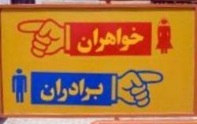

پذيرش > اخبار > سریال تفکیک جنسیتی و کاهش اشتغال زنان


 سریال تفکیک جنسیتی و کاهش اشتغال زنان سریال تفکیک جنسیتی و کاهش اشتغال زنان
18 تیر 1391 - - نسخه قابل چاپ
رادیو زمانه: در هفته گذشته واکنشها نسبت به پوشش زنان که با گرم شدن هوا به بخش ثابت خبرهای تابستان تبدیل شده است، همچنان ادامه داشت. علاوه بر اعتراضهای همیشگی امامان جمعه و مقامهای محلی، فرمانده نیروی انتظامی در صحن مجلس درباره مقابله با "بدحجابی" گزارش داد و نمایندگان مجلس نیز علیه "بدحجابان" نامه اعتراضی نوشتند.
همگام با این مسئله تفکیک جنسیتی و سنگاندازی در اشتغال زنان نیز بهسان یک برنامه تغییرناپذیر در دستور کار دستاندرکاران امر بود و علاوه بر آن مجازات زندان برای مردانی که مهریه نمیدهند نیز حذف شد. در کنار همه این خبرها، نام لایحه امنیت زنان نیز تغییر کرد. این تغییر نام در کنار اظهار نظرهای جدید منتشر شده نسبت به برخی نگرانیها درباره محتوای این لایحه نیز دامن زده است.
لایحهای که به زنان امنیت نمیدهد
در حالی که مسئولان مرکز امور زنان و خانواده ریاست جمهوری از ارسال لایحه امنیت زنان به دولت تا پایان اردیبهشت ماه جاری خبر داده بودند، این لایحه همچنان در مرحله بررسی پیشنویس آن به سر میبرد و به نظر میرسد نام آن نیز به "لایحه امنیت خانواده" تغییر کرده است.
گفتوگوی فریبا حاجیعلی، رئیس دبیرخانه ستاد ملی زن و خانواده با خبرگزاری فارس همچنان حاکی از آن است که اهداف ابتدایی پیشبینی شده برای این لایحه نیز دستخوش بازنگری شدهاند و "شناخت خلاءهای قانونی و قوانین ناقص مبهم و ناکارآمد که به طور مستقیم و غیر مستقیم باعث بروز خشونت ساختاری علیه زنان میشود" جای خود را به "پاسخ به شبهات غرب" در رابطه با زنان ایرانی داده است.
چندی پیش پروین هدایتی، معاون سرمایههای اجتماعی مركز امور زنان و خانواده، "بررسی دیدگاه اسلام در خصوص هریک از مباحث قانونی و کیفری زنان، بررسی میزان پویایی فقه در تدوین مقررات جدید منطبق با نیاز روز جامعه، شناسایی آسیبهای اجتماعی زنان در ایران و بررسی میزان و انواع خشونت علیه زنان، شناسایی مشکلات و چالشهای قانونی زنان در زمینه حقوق کیفری، شناخت خلاءهای قانونی و قوانین ناقص مبهم و ناکارآمد که به طور مستقیم و غیر مستقیم باعث بروز خشونت ساختاری علیه زنان میشود" را از مهمترین اهداف تدوین این لایحه عنوان کرده بود.
رئیس دبیرخانه ستاد ملی زن و خانواده اما در اظهارات اخیر خود، این لایحه را " نوعی شفافسازی ارزشهای اسلامی در دفاع از حقوق زنان" دانسته و گفته است این لایحه برای پاسخ به "شبهات و موضعگیریهای غلط کشورهای غربی نسبت به جایگاه زنان مسلمان ایرانی" در اولویت برنامههای سال ۹۱ قرار گرفته است.
سخنان این مقام مسئول، اندک امید ایجاد شده برای ایجاد راهکارهای قانونی در راستای کاهش خشونت علیه زنان را کم سو کرده است و به این نگرانی دامن میزند که تصویب چنین لایحههایی بیش از آنکه در جهت بهبود شرایط زنان باشد، در راستای ایجاد ویترینی برای توجیه خشونتهای اعمال شده علیه زنان و ارائه آن در مجامع جهانی است.
با اینهمه و با وجود همه تردیدها نسبت به کارایی همین لایحه هنوز به تصویب نرسیده، مصطفی اقلیما، رئیس انجمن علمی مددکاری تاثیر چنین لایحهای را به صورت کلی زیر سئوال برده و معتقد است: "مسئله خشونت علیه زنان چه در بعد جسمی باشد و چه در بعد روانی و اقتصادی اتفاق بیفتد در صورت اجرای قوانین جزایی زن به حقوق خود نمیرسد. چون با این کار مسائل و مشکلات دیگری برای وی به وجود میآید."
وی که معتقد است ایران در در مقایسه با سایر کشورها بیشترین قانون را در حمایت از حقوق زن و خانواده دارد، میگوید: "اگر همسر زن در اثر خشونت به زندان برود، بعد از آزادی به شرطی که همسرش از او طلاق نگرفته باشد دوباره رفتارهای خشونتآمیز قبلی را تکرار خواهد کرد."
ایجاد مهد کودک در محل کار برای مقابله با تکفرزندی
در چندماه اخیر، دستگاههای مختلف اجرایی و قانونگزاری دو برنامه مبارزه با طرحهای کنترل جمعیت و تلاش برای کاهش و محدود کردن اشتغال زنان را به صورت همزمان به پیشمیبرند و هراز چند گاه خبری در این حوزهها منتشر میشود.
آخرین رخداد این حوزه که از سوی خبرگزاری ایرنا منتشر شده، سخنان حامد برکاتی، رئیس اداره سلامت کودکان وزارت بهداشت مبنی بر افزایش مرخصی زایمان زنان به ۹ ماه و رسیدن آن به سقف دوسال است.
وی دوشنبه هفته گذشته در یک نشست خبری گفت برای پدران نیز یک مرخصی ۱۰ روز درنظر گرفته شده تا "پس از تولد کودک، تعامل بیشتری با همسران خود در مراقبت از فرزندان داشته باشند".
در بسیاری از کشورها پدر و مادر هر دو می توانند از مرخصی زایمان استفاده کنند و نگهداری از کودک و دور ماندن از فضای کار، تنها بر مادران تحمیل نمیشود. در ایران اما در چند سال اخیر انواع و اقسام طرحهای دورکاری، اشتغال نیمه وقت، بازنشستگی زودرس و تعطیلی پنجشنبهها و ... در صدد کاهش حضور زنان دارای فرزند در بازار اشتغال است.
بهانه اصلی اغلب این طرحها توجه به نقش مادری زنان و منحصر کردن وظیفه تربیت فرزندان به زنان است و البته مقابله با طرحهای کنترل جمعیت که ارتباط گستردهای با اشتغال زنان دارد.
در همین زمینه اداره سلامت کودکان وزارت بهداشت طرح دیگری برای "احیای مهدهای کودک در ادارهها و کارخانهها برای کودکان زیر دو سال" ارائه کرده که به گفته رئیس این اداره، هدف آن "نجات کشور از پدیده تک فرزندی" است.
این در حالی است که حتی این نگاه کلیشهای به "وظیفه مادری زنان" از سوی برخی مقامات ایران تحمل نمیشود و برخی همچون لاله افتخاری، نماینده اصولگرای مردم تهران در مجلس نهم به صورت کلی با وجود نهادی به عنوان مهدکودک مشکل دارند. این نماینده مجلس سیزدهم تیرماه جاری گسترش مهدکودکها در ایران را "برنامهریزی دشمن در شهرها و روستاها برای جدایی فرزندان از مادران" دانست و گفت "دامن مادر برای تربیت کودک" بهترین مهدکودکهاست. به عقیده وی، "در بعضی از مهدکودکها تربیت اروپایی به فرزندان ما آموزش داده میشود که فرزندان ما نباید این فرهنگ را آموزش ببینند."
تفکیک جنسیتی به سازمانهای غیر دولتی هم رسید
تفکیکهای جنسیتی، یکی دیگر از داستانهای دنبالهدار اخبار حوزه زنان در ماههای اخیر است.
آخرین خبر اینکه پس از هشدار و انذارهای گاه به گاه درباره وضعیت "غیر اسلامی" دانشگاهها و وعدههای مسئولان آموزشی برای "اصلاح" امور، بالاخره اولین دانشگاههای تک جنسیتی در چند شهر ایران آغاز به کار کردند.
به گفته محمد مهدی مظاهری، معاون فرهنگی دانشگاه آزاد، تا کنون شش واحد تک جنسیتی در منطقه چهار دانشگاه آزاد تأسیس شده است و ۹۰ درصد دروس عملی، آزمایشگاهی و کارگاهی و صد درصد دروس عمومی به صورت تک جنسیتی ارائه میشود.
غلامرضا خواجهسروی، معاون فرهنگی اجتماعی وزیر علوم، تحقیقات و فناوری ایران نیز روز یازدهم تیرماه از راهاندازی "پرشتاب" دانشگاههای دخترانه در هر استان خبر داده و گفته بود که به زودی در هر استان یک دانشگاه دخترانه راهاندازی خواهد شد.
تفکیک جنسیتی البته محدود به دانشگاهها نیست و به تازگی یک نماینده مجلس به اختلاط دختران و پسران در سازمانهای غیر دولتی هشدار داده و خواستار کنترل آن شده است.
حسین طلا، نماینده تهران در مجلس نهم و فرماندار سابق تهران، بعدازظهر روز سهشنبه ١٣ تیرماه در همایش "جوانان دیروز، امروز و فردا" گفت: "باید در راه سالمسازی روابط در سازمانها و انجمنهای مردمی و خوداتکا بکوشیم و تلاش کنیم روابط دختران و پسران در چنین فضاهایی کنترل شود، تا خدای ناکرده در این قسمت نیز با مشکلی روبهرو نشویم."
با همه این سختگیریها که اغلب در راستای طرحهای "امنیت اخلاقی" و "گسترش فرهنگ حجاب و عفاف" دنبال میشوند، بر اساس آنچه اسماعیل احمدیمقدم، فرمانده نیروی انتظامی در صحن علنی مجلس اعلام کرده است، فقط ۴۹ درصد ایرانیها خواهان برخورد با "بدحجابی" هستند.
مردانی که مهریه نمیدهند، زندان نمیروند
آخرین خبر هم که روز جمعه منتشر شد، حاکی از آن است که مردانی که از دادن مهریه همسرانشان شانه خالی میکنند از این پس بازداشت نخواهند شد و با این تصمیم جدید قوه قضائیه، تنها ابزار به نسبت کارای زنان برای وادار کردن مردان به دادن حقوق بدیهی آنها همچون حق طلاق یا حضانت فرزندان نیز از بین خواهد رفت.
پس از انتشار چندین مطالعه اجتماعی درباره تاثیر مهریه در "فروپاشی ۲۰ هزار خانواده ایرانی" و بررسی فقهی شرعی نبودن بازداشت مردانی که توانایی پرداخت مهریه را ندارند در روزهای اخیر، سرانجام صادق آملی لاریجانی اعلام کرد که با ابلاغ یک آئیننامه جدید، زندانیانی که توانایی پرداخت مهریه را ندارند آزاد میشوند و مردانی که در پرداخت مهریه معسر (ناتوان) هستند یا در معسر بودن یا نبودن آنان تردید وجود دارد، به زندان نخواهند رفت.
به گزارش خبرگزاری دانشجویان ایران (ایسنا)، آیتالله صادق آملی لاریجانی گفته است: "نگهداشتن این افراد در زندان به جز ضرر برای خود و خانوادههایشان، تاثیری ندارد" و البته هیچ اشارهای نیز به تاثیر این تصمیم بر وضعیت زنان نکرده است.
فعالان حقوق زنان جایگزینی مهریه با شروط ضمن عقدی همچون حق طلاق، حق اشتغال، حق سفر، حق برابری اموال مشترک و ... را برای بهبود شرایط زنان پیشنهاد میکنند، اما در شرایطی که شمار زیادی از خانوادهها، مردان و سردفترداران ازدواج و طلاق با این شروط مخالف هستند و مانع از ثبت آن میشوند، بسیاری از دختران جوان، تعیین مهریه و به طور مشخص مهریههای سنگین را تنها تضمین احقاق برخی از حقوق شهروندیشان میدانستند؛ تضمینی که با حذف بازداشت به عنوان ابزار اجرایی آن کارایی خود را از دست خواهد داد.
ارسال به
بالاترین
،
توییتر
،
فریندفید
،
فیسبوک
در همين بخش :
 پروین ذبیحی برنده جایزه حقوق بشری سازمان غيردولتى اتريشى سودويند شد پروین ذبیحی برنده جایزه حقوق بشری سازمان غيردولتى اتريشى سودويند شد
پخش کارت پستال و بروشور در روز جهانی زن در تهران
تمدید زمان برای امضای بیانیهی جمعی از فعالان زن به مناسبت هشت مارس
مجوزی که در نطفه خفه شد
بیش از 2000 امضا در اعتراض به تبعیض های آموزشی به مجلس تحویل داده شد
ديگر بخش ها :
طرح یک میلیون امضا
|
مقالات
|
سایت نوشته ها
|
اخبار
|
گزارش كمپين
|
گفت و گو
|
علیه سکوت
|
كوچه به كوچه
|
نامه های شما
|
گزارش ویژه
|
گفتگو با اعضا
|
ویژه سالگرد کمپین
|
تصویر برابری
|
دل آرام علی
|
تریبون
|
مقالات
|
تاریخ شفاهی
|
خارج از چارچوب
|
کتابخانه
|
درباره کمپین
|
کمپین در شهرها
|
کمپین در بند
|
صدای تغییر
|
ویژه 22 خرداد
|
لایحه حمایت از خانواده
|
گالری
|
عشا مومنی
|
امیر یعقوبعلی
|
خدیجه مقدم
|
راحله عسگری زاده و نسیم خسروی
|
پروین اردلان،جلوه جواهری، مریم حسین خواه، ناهید کشاورز
|
زینب پیغمبرزاده
|
سعیده امین، سارا ایمانیان، محبوبه حسین زاده، ناهید کشاورز و همایون نامی
|
احترام شادفر
|
نسیم سرابندی زاده،فاطمه دهدشتی
|
وبلاگ مهمان
|
پرونده خرم آباد
|
دستگیری ها
|
مریم مالک
|
پرستو اللهیاری
|
مهرنوش اعتمادی
|
سمیه رشیدی
|
Other Languages
|
همراهان
|
«فراخوان کمپین ده روز با بهاره هدایت»
| English
|